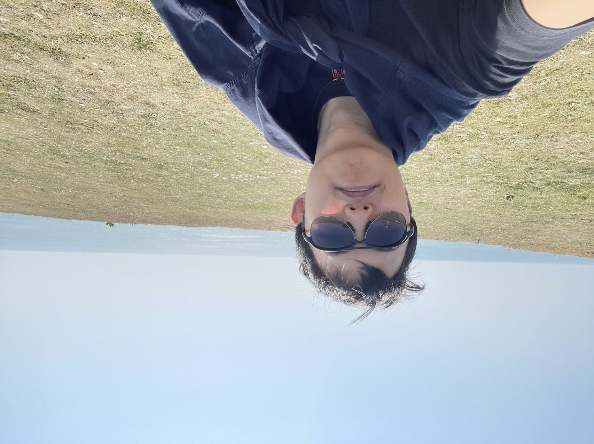

|  |
[Email] [Github] [Google Scholar] [Semantic Scholar] |
I am a first-year PhD student in Computation, Cognition and Language at Language Technology Lab in the University of Cambridge, supervised by Prof. Anna Korhonen and Dr. Ivan Vulić. My research is supported by Cambridge Trust. I am a member of Jesus College.
Before starting my PhD, I received my MPhil degree in Advanced Computer Science at the Department of Computer Science, supervised by Prof. Simone Teufel, supported by Cambridge Trust. I was an undergraduate student in Automation at Xi'an Jiaotong University.
I'm generally interested in different topics in NLP and machine learning. My research interests include semantic parsing, structural knowledge, large language models and their applications. I am currently exploring and focusing on:
Grounding large language models in physical environments
Multimodal reasoning with vision and language
In-context learning and other learning paradigms.
I'm also interested in the possible applications of Gaussian Process and causality in NLP area.
PhD (Probationary) in Computation, Cognition and Language, Language Technology Lab, University of Cambridge, 2023 - now
Master of Philosophy in Advanced Computer Science, University of Cambridge, 2022 - 2023
Graduation with Distinction
Bachelor of Engineering in Automation, Xi'an Jiaotong University, 2018 - 2022
Graduate with Distinction (91.88/100)
Minor in Fintech (China Construction Bank - XJTU Fintech Elite Class)
(*: equal contribution)
Preprints
2024
On Task Performance and Model Calibration with Supervised and Self-Ensembled In-Context Learning
Chengzu Li, Han Zhou, Goran Glavaš, Anna Korhonen, Ivan Vulić.
ICLR 2024 Workshop on Reliable and Responsible Foundation Models. [pdf] [code]
Semantic Map-based Generation of Navigation Instructions
Chengzu Li, Chao Zhang, Simone Teufel, Rama Sanand Doddipatla, Svetlana Stoyanchev.
COLING-LREC 2024. [pdf] [code]
2023
Generating Data for Symbolic Language with Large Language Models
Jiacheng Ye, Chengzu Li, Lingpeng Kong, Tao Yu.
EMNLP 2023. [pdf] [code]
Binding Language Models in Symbolic Languages
Zhoujun Cheng, Tianbao Xie, Peng Shi, Chengzu Li, Rahul Nadkarni, Yushi Hu, Caiming Xiong, Dragomir Radev, Mari Ostendorf, Luke Zettlemoyer, Noah A. Smith, Tao Yu.
ICLR 2023 (spotlight). [pdf] [code]
2022
UnifiedSKG: Unifying and Multi-Tasking Structured Knowledge Grounding with Text-to-Text Language Models
Tianbao Xie, Chen Henry Wu, Peng Shi, Ruiqi Zhong, Torsten Scholak, Michihiro Yasunaga, Chien-Sheng Wu, Ming Zhong, Pengcheng Yin, Sida I. Wang, Victor Zhong, Bailin Wang, Chengzu Li, Connor Boyle, Ansong Ni, Ziyu Yao, Dragomir Radev, Caiming Xiong, Lingpeng Kong, Rui Zhang, Noah A. Smith, Luke Zettlemoyer, Tao Yu.
EMNLP 2022, long paper (oral). [pdf] [code]
Jan. 2023 - July 2023
Research Intern, Toshiba Cambridge Research.
Mentor: Svetlana Stoyanchev, Chao Zhang, Rama Sanand Doddipatla and Prof. Simone Teufel.
Research about Generating Instructions for Robot Navigation as the MPhil thesis.
Oct. 2021 - Jan. 2022
Research Intern, Shanghai AI Lab.
Mentor: Lingpeng Kong.
Research about Structural Knowledge Grounding.
June 2021 - Oct. 2022
Research Intern, HKUNLP.
Mentor: Tao Yu and Lingpeng Kong.
Worked on Structural Knowledge Grounding, Semantic Parsing and Neural-Symbolic Reasoning.
July 2020 - Aug. 2020
Engineer Intern, Dianchu Technology.
Worked on machine learning engineering.
Scholar of Jesus College (for outstanding academic performance), 2024.
PhD Scholarship, Cambridge Trust, 2023.
Master Scholarship, Cambridge Trust, 2022.
National Scholarship (1%), Ministry of Education of China, 2019.